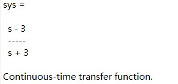
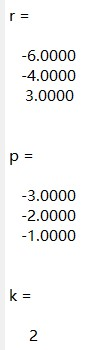
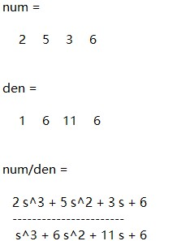
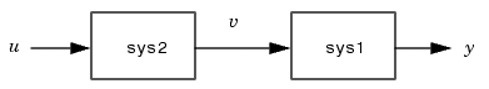
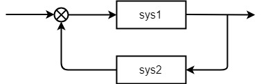
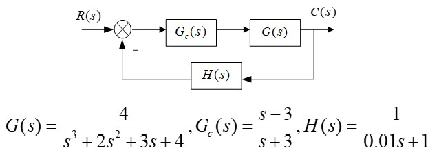
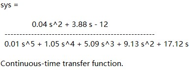

ME31002 Lab Session 2 -- System Modeling
Transfer Functions
To build a control system, the first step is to build the system model. In general, we can use transfer functions represent the system model. Matlab offers powerful tools for representing the system model. Next, let's study how to depict the transfer functions in Matlab. In Matlab, the function to create the transfer function models is "tf". In general, you can use two types of syntax to create the transfer function. The first one is
s = tf('s');
sys = transfunc
s = tf('s')
sys = 4/(s^3+2*s^2+3*s+4)

num = [numerators];
den = [denominators];
sys = tf(num, den)
num = [1, -3];
den = [1, 3];
sys = tf(num, den)

Partial Fraction Decomposition
In many cases, we need to use the partial fraction decomposition of the transfer functions. However, it could be very difficult to find the partial fraction decomposition of a transfer function with high order and complex structures. In Matlab, it offers a simple function to solve the problem. The syntax for computing the partial fraction decomposition of transfer functions is
num = [numerators];
den = [denominators];
[r, p, k] = residue(num, den)

num = [2, 5, 3, 6];
den = [1, 6, 11, 6];
[r, p, k] = residue(num, den)


r = [-6, -4, 3];
p = [-3, -2, -1];
k = 2;
[num, den] = residue(r, p, k)
printsys(num, den, 's')

Arithmetic of Transfer Function
The arithmetic of transfer function in Matlab is similar to scalars and vectors. You can use the following syntax to compute the addition, subtraction, multiplication, inverse and division of systems.
sys = sys1 + sys2
sys = sys1 - sys2
sys = sys1*sys2
sys = inv(sys1)
sys = sys1\sys2 (equals to inv(sys1)*sys2)
sys = sys1/sys2 (equals to sys1*inv(sy2))
Connection of System Models
In general, a system has different structures, such as series connection, parallel connection, and feedbacks. Matlab also provides powerful tools to connect different parts of the system. The series connection of two sub-systems can be created by the following syntax
sys = series(sys2, sys1)

sys = parallel(sys1, sys2)

sys = feedback(sys1, sys2, sign)


s = tf('s');
G = 4/(s^3+2*s^2+3*s+4);
G_c = (s-3)/(s+3);
H = 1/(0.01*s+1);
sys1 = series(G, G_c);
sys = feedback(sys1, H)

Usage in Octave
To use the functions "series", "parallel", "feedback" in Octave, you need to load the control package firstly. You can add the following script to the beginning of your code to solve it.
pkg load control;